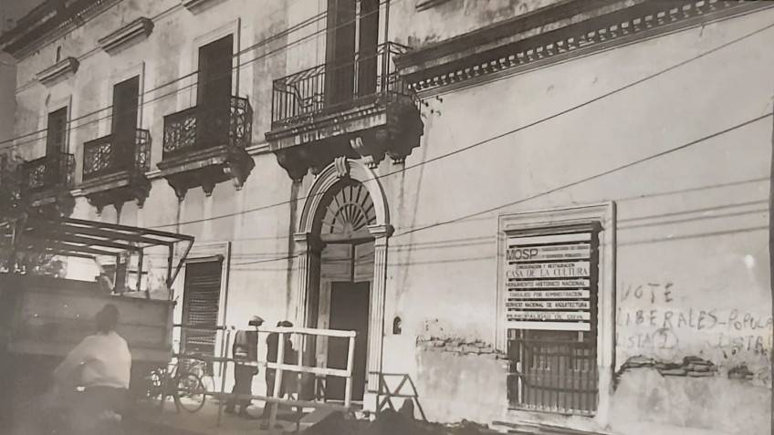
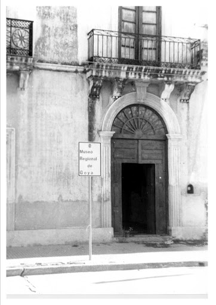
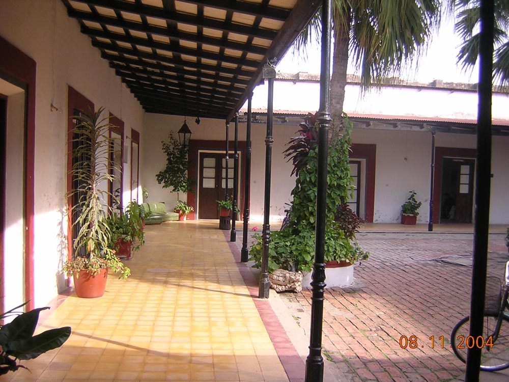
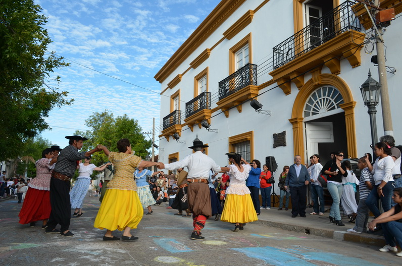
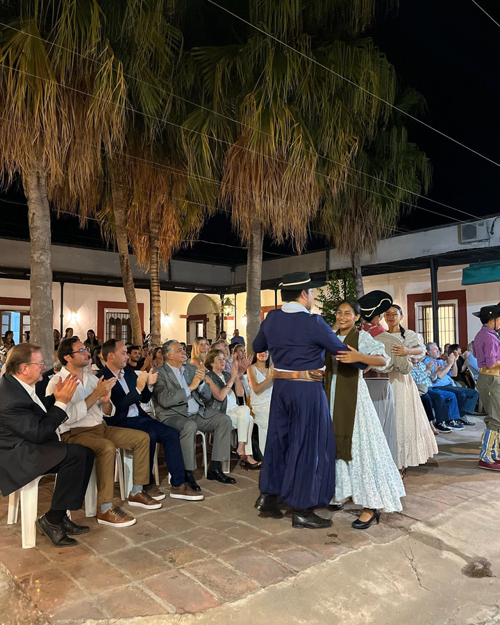

Aniversario de la Casa de la Cultura
En relación al aniversario de la Casa de la Cultura, a los 30 años de la conformación de ese lugar histórico de la ciudad como sede y ámbito de las actividades culturales y lugar a partir de allí, natural para la Dirección de Cultura, la profesora María Margarita Fogantini detalló cada aspecto para el logro de ese cometido.
"Fuimos continuadores de un Proyecto impulsado desde hace mucho tiempo", aseguró Margarita Fogantini. A la labor y proceso cultural de la Casona calificó como "Cosecheros del Sembrador".
Repaso histórico de la conformación de la Casa y Dirección de Cultura
Margarita Fogantini, explicó: "Una vez en Concordia leí una frase atribuida a Francisco de Sales 'El Cosechero nunca se olvida del sembrador'; es quien esparce semillas para la generación de las plantas y el cosechero recoge los frutos de la tierra, existen en todas las actividades humanas, siempre hay antecedentes que después se concretan en un momento determinado.
Tendríamos que remontarnos al año 1964, cuando se origina la idea de un Museo Regional en la ciudad, en épocas del Intendente Antonio Villarreal; relacionado a la historia, la filatelia, ciencias naturales, unos pocos años después se aprueba la adquisición de esa casa (J.E. Martínez y 9 de julio), en el año 1982 durante la Intendencia de Víctor Juan Antonio 'Pacho' Balestra, se compra el inmueble, propiedad de Gregorio Araujo, toda la planta baja, la planta alta, según la arquitecta Ángela Sánchez Negrette, estudiosa de la arquitectura correntina eso fue un agregado a fines del siglo XIX o principios del XX, por eso la ubicación de la esclarea."
Este es un video increíble que muestra algunas características impresionantes.
Adquisición del inmueble
La Profesora Fogantini, agregó: "En noviembre de 1982, Director de Cultura Luis Horacio Carbone, que ha gestionado para la compra, se concreta la adquisición del Lote 3; 2 lotes 1 y 2 sobre la línea de la calle Tucumán, y una más sobre Juan Esteban Martínez, el zaguán la mitad del jardín, las habitaciones que cierran el lado este, el lado sur, el norte conformaban ese lote adquirido por la Municipalidad."
Dirección de Cultura: una construcción colectiva
En 1991, en la intendencia de Daniel Avalos, me convoca a la Dirección de Cultura y es cuando se decide instalar en 1992, la Dirección con la apertura de la casa permitió el acercamiento de las personas y los vecinos en un gesto y actitud de solidaridad entregaban elementos, muebles en carácter de donación o préstamos para el uso y la empresa Massalin Particulares ante la solicitud hecha a Hugo Maidana, gerente, mobiliarios para la oficina, otros que traían mesa, máquina de escribir y así se pobló esa casa, algo que la Sociedad Goyana reclamaba la habilitación definitiva, es allí que podemos ser los continuadores de un proyecto asumido desde hace tiempo."
Gratitud a la Sociedad Goyana
En la parte final de esta reseña, que supo nombrar y reconocer a todas las gestiones siguientes, la profesora María Margarita Fogantini destacó el trabajo de los agentes municipales, del corralón que han puesto su dedicación, su fidelidad al trabajo, a las entidades, a las asociaciones, a las empresas, a los periodistas, a los medios de comunicación por la ayuda y a los: "que no están porque son importantes para mí, eternamente agradecida."
Bibliografía: https://www.goya.gob.ar/?q=content/casa-la-cultura
Información de contacto
Dirección: BYM, Juan E. Martínez 698, W3450 Goya, Corrientes
Teléfono: 03777 43-2693
Provincia: Corrientes
Enlace a la ubicación: https://goo.gl/maps/C9eDuMyTkdDnKHxD7